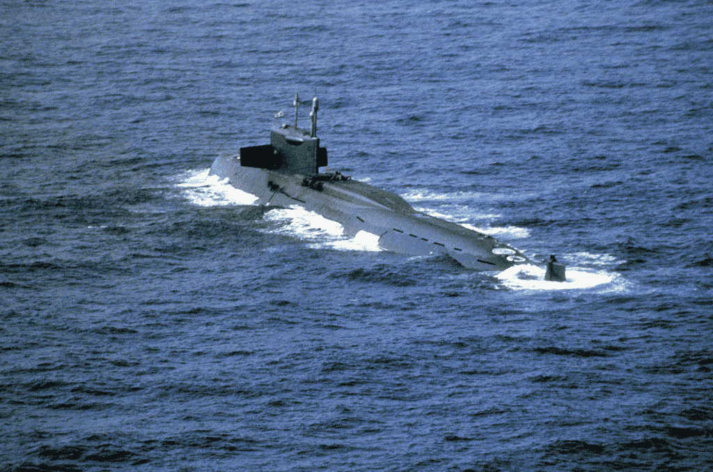
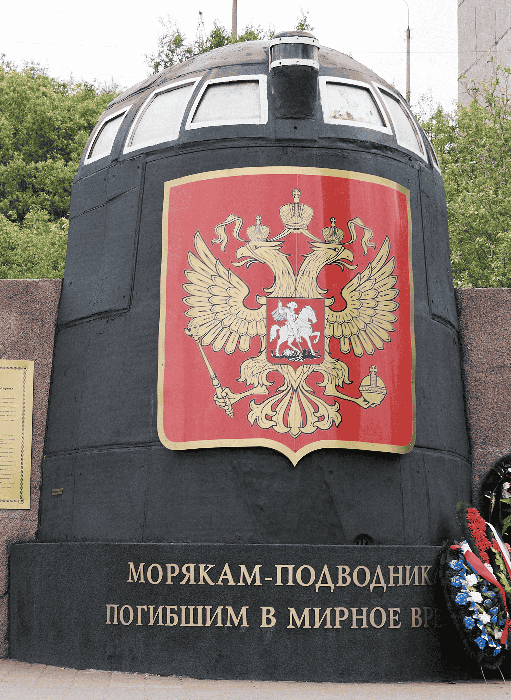

SubWiki
SubWiki

K-19 war ein sowjetisches U‑Boot mit ballistischen Raketen
(Projekt 658), das in den späten 1950er‑ und frühen 1960er‑Jahren gebaut
wurde und als eines der ersten nuklear angetriebenen U‑Boote der
Sowjetunion galt. Es war strategisch wichtig, weil es theoretisch in der
Lage war, Atomraketen gegen Ziele in den USA zu starten — zu einer Zeit,
als die Gegenseite noch keine zuverlässigen interkontinentalen Raketen
hatte.
Die Kiellegung und der Stapellauf von K‑19 fanden beide am 17. Oktober
1958 bzw. 1959 statt, und am 12. November 1960 wurde das Boot offiziell
in Dienst gestellt. Es war etwa 114 Meter lang, hatte über 110
Besatzungsmitglieder und war mit ballistischen Raketen sowie Torpedos
bewaffnet.
K‑19 hatte einen Ruf für anhaltendes Pech und zahlreiche Unfälle. Schon
während der Bauzeit starben mehrere Arbeiter, und auch im Dienst kam es
immer wieder zu schweren Zwischenfällen. Besonders bekannt wurde ein
schwerer Reaktorunfall am 4. Juli 1961: Der Kühlkreislauf eines der
Reaktoren fiel komplett aus, und es gab keine richtige Notkühlung. Um
eine Kernschmelze zu verhindern, improvisierte die Technikmannschaft
eine Ersatzlösung — unter schrecklicher Strahlenbelastung. Viele der
Männer starben später an den Folgen dieser Strahlung. Die sowjetische
Marine hielt die Details des Unfalls jahrzehntelang geheim.
In den folgenden Jahren blieb das Boot von Problemen nicht verschont: Es
kollidierte 1969 mit dem US‑U‑Boot USS Gato, was zu Schäden führte, und
1972 brach ein Feuer an Bord aus, bei dem mehrere Seeleute starben.
Trotz dieser Rätselgeschichte blieb K‑19 lange im Dienst.
Nach Jahrzehnten voller Pannen und tragischer Ereignisse wurde K‑19
schließlich am 19. April 1990 außer Dienst gestellt. Der Rumpf blieb
noch Jahre liegen und wurde erst Anfang der 2000er Jahre abgewrackt.
Teile des Bootes wurden später als Denkmal und Erinnerungsstücke an die
Opfer erhalten.
Die dramatische und gefährliche Geschichte von K‑19 inspirierte auch den
Hollywood‑Film K‑19: The Widowmaker (2002) mit Harrison Ford und Liam
Neeson, der die dramatische Reaktorpanne und den persönlichen Einsatz
der Besatzung fiktional nacherzählte.
| Kategorie | Daten |
|---|---|
| Name | K‑19 |
| Werft | Werft 402, Sewerodwinsk |
| Kiellegung | 17. Oktober 1958 |
| Stapellauf | 17. Oktober 1959 |
| Indienststellung | 12. November 1960 |
| Länge | ca. 114 m |
| Besatzung | ca. 114 Mann |
| Bewaffnung | Torpedorohre + 3 R‑13 Raketen |
| Unfälle & Zwischenfälle | Reaktorunfall 1961, Kollision 1969, Feuer 1972 |
| Außer Dienst | 19. April 1990 |
| Verbleib | Abgewrackt; Teile als Denkmal erhalten |
(Bild könnte nicht K-19 portrieren)

Urheberechts freie Bilder nicht verfügbar
Die „Kursk“ war ein russisches Atom‑U‑Boot der Oscar‑II‑Klasse
(Projekt 949A), das in den frühen 1990er Jahren gebaut wurde und einer
der größten und modernsten Unterseeboote der russischen Nordflotte war.
Es war konstruiert als ein strategischer Angreifer mit starken
Seezielflugkörpern und Torpedos und repräsentierte nach dem Ende des
Kalten Krieges die militärische Stärke Russlands auf hoher See.
Der Bau des U‑Boots begann Anfang der 1990er Jahre in der Werft 402 in
Sewerodwinsk. Die Kiellegung erfolgte 1990, der Stapellauf am
16. Mai 1994 und die offizielle Indienststellung am 30. Dezember 1994.
Danach wurde die Kursk in der nordrussischen Marinebasis Widjajewo
stationiert.
Am 12. August 2000 nahm die Kursk unter dem Kommando von Kapitän Gennadi
Ljatschin an einem Großmanöver der Nordmeerflotte in der Barentssee
teil. Während dieser Übung kam es zu einer verheerenden Serie von
Explosionen im vorderen Teil des Bootes. Offiziellen Berichten zufolge
brach zunächst ein Übungstorpedo im Abschussraum zusammen und
explodierte, was sehr schnell weitere Sprengsätze zur Detonation
brachte. Dadurch wurde das U‑Boot schwer beschädigt, es sank in etwa
108 Meter Tiefe und blieb auf dem Meeresboden liegen.
Die Lage war dramatisch: Von den insgesamt 118 Besatzungsmitgliedern an
Bord starben alle während des Vorfalls oder in den Stunden danach. In
den ersten Tagen nach dem Untergang gab es Berichte, dass Überlebende in
einem hinteren Abteil noch lebten – doch die Rettungsversuche
scheiterten. Die russische Marine verfügte nicht über geeignete
Rettungsausrüstung, und internationale Hilfsangebote wurden zu spät oder
nur zögerlich angenommen. Letztlich erreichten Retter die
eingeschlossenen Seeleute nicht rechtzeitig, und es gab keine
Überlebenden.
Die russische Regierung und Marine sorgten in der Folge für weltweite
Kritik: Zunächst wurde behauptet, die Kursk sei durch eine Kollision mit
einem ausländischen U‑Boot versenkt worden, was sich jedoch als unbelegt
herausstellte. Später zeigte ein Untersuchungsbericht, dass ein interner
Torpedounfall wahrscheinlich die Ursache war.
Der Untergang der Kursk wurde zu einem nationalen Trauma in Russland,
nicht nur wegen der vielen Toten, sondern auch wegen des Umgangs mit der
Katastrophe und der verzögerten Rettungsaktionen. Dieses Ereignis wurde
später in Büchern und Filmen thematisiert und gilt als eines der
tragischsten Unglücke der modernen Marinegeschichte.
Ein Jahr nach dem Unglück gelang es schließlich, das Wrack teilweise zu
bergen. Dies war eine technisch anspruchsvolle Aktion, bei der das Boot
vom Meeresboden an die Oberfläche gehoben wurde, um weitere
Untersuchungen und die Bergung der Überreste zu ermöglichen.
| Kategorie | Daten |
|---|---|
| Name | K‑141 „Kursk“ |
| Typ | Atom‑U‑Boot, Oscar‑II‑Klasse |
| Werft | Werft 402, Sewerodwinsk |
| Stapellauf | 16. Mai 1994 |
| Indienststellung | 30. Dezember 1994 |
| Heimathafen | Widjajewo (Nordflotte) |
| Länge | ca. 154 m |
| Besatzung | ca. 112 Mann |
| Unglück | 12. August 2000, Barentssee |
| Ursache | Explosionen im Torpedoraum (vermutlich) |
| Verluste | 118 Tote (alle an Bord) |
| Bergung | Teilweise gehoben (2001) |